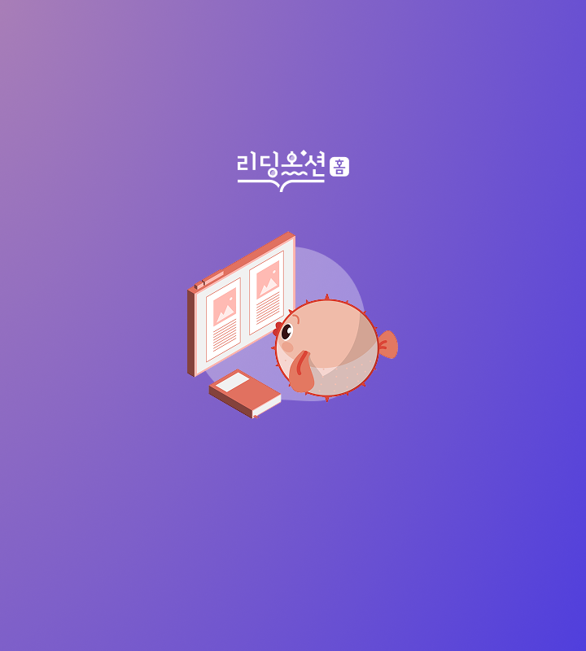
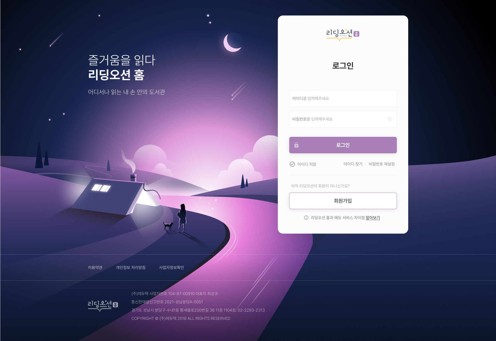
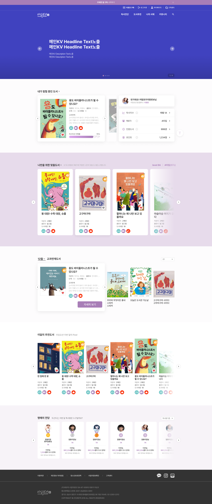

Yoo Kwangryeol
menu
Work
About
Contact
close
Web & APP Design
리딩오션 홈
즐거움을 읽다
시간과 공간의 제한이 없는
우리 아이를 위한 재미있는 독서의 시작
Tools Used
Figma
Ai
Ps

Problem
쉽게 사용할 수 있는 전문적인 독서 코칭 필요.
주 1회 독서 유도할 수 있는 UI 필요성.
오프라인 기반 수업이 더 중요하다는 강조.
Goal
실물도서를 같이 읽는다.
올바른 독서습관을 기른다.
스스로 독서하기를 원한다.
Role
리서치
UX 디자인
UI 디자인
테스트
Responsibilities
인터뷰
브랜드 디자인
와이어프레임 제작
프로토타입 제작
반응형 디자인
PC 로그인페이지

PC 메인페이지

arrow_forward
arrow_upward